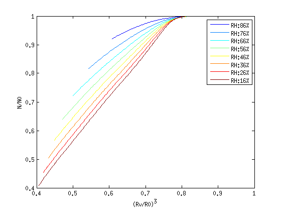

Turbulence configuration
The turbulence is initialized in Fourier space with only the smallest wave number, then transformed into physics space.
We use two kinds of configurations to simulate different intensity of turbulence.
Entrainment and mixing
Illustration for the entrainment and mixing process
At initial time, the cloud is set in the center of the box with higher vapor mixing ratio(1.02*qs) than the boundary.
The following two Figures illustrate the distribution function, the red line shows the value of qs.
The current simulation runs for 20s physics time which is about one eddy turnover time.
| Distribution function x-z slide | Initial vapor in x-z slide |
The left figure shows the evolution of the vapor mixing ratio field and the right one shows the motion of droplets.
At t=0s, the droplets are restricted in the supersaturated area. Here is set to be from x=0.3m to x=0.7m.
Comparing to the computation domain 1 m^3, the dry air fraction is 40%. The color of the droplets represent their radius,
from blue(small) to red(large).
| vapor mixing ratio field | Droplets |
 |
 |
| RN diagram | 1-alpha versus NL | N versus relative Dispersion |
RN diagram
Three different settings are used: RH = 86%, 76%, 66%, 56%
>| R-N diagram | Da number VS. slope of R-N diagram | 1-alpha VS. NL |
|  |  |
 |